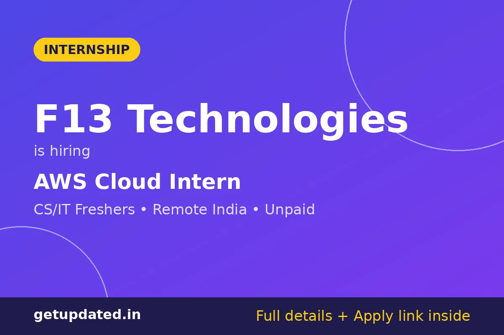

Accenture has opened a role for an Application Tech Support Practitioner at its Bengaluru office. The posting is marked entry level and asks for a minimum of 0-2 years of experience, so freshers and early-career candidates with Oracle database skills can apply.
The role sits between the client and the application or system. You will understand client problems, identify the exact issue and work with other teams to fix it. The core technical skill named in the posting is Oracle Database Administration (DBA).
Applications are taken through LinkedIn Easy Apply on the employer's own posting. No last date is given, and the job was posted only a day before this article, so applying early makes sense. Below is everything the posting says, plus practical advice on preparing.
Table of Contents
- Quick Highlights
- About Accenture
- Role Overview
- Responsibilities in Detail
- Eligibility Criteria
- Skills Required
- Salary and Benefits
- Selection Process
- How to Apply
- Preparation Plan
- Interview Topics to Expect
- Common Mistakes to Avoid
- Official Links and Final Checklist
- Final Takeaway
- Also Read
- FAQs
Quick Highlights
| Particular | Details |
|---|---|
| Company | Accenture in India |
| Role | Application Tech Support Practitioner |
| Location | Bengaluru, Karnataka (office based) |
| Experience | Minimum 0-2 years |
| Education | 15 years full time education |
| Must-have skill | Oracle Database Administration (DBA) |
| Employment type | Full-time |
| Seniority | Entry level |
| Apply mode | LinkedIn Easy Apply |
| Last date | Not disclosed |
| Salary | Not disclosed |
Apply early
The posting shows no closing date, and such roles can be taken down once enough applications arrive. Do not wait for the last minute.
About Accenture
Accenture is a global professional services company working in technology, consulting and operations. It is listed in the posting under IT Services and IT Consulting. It has a large presence in India, and Bengaluru is one of its major delivery locations.
For freshers, a company like this offers exposure to enterprise clients, structured training and a chance to work on live production systems early in a career. Application support and database roles are a common entry point because they teach how real business systems run day to day.
Role Overview
The posting describes the Application Tech Support Practitioner as the ongoing interface between the client and the system or application. The person is expected to be dedicated to quality and to use strong communication skills to keep systems running well.
A typical day, as described, includes:
- Acting as the primary point of contact for clients on the application or system.
- Understanding client concerns and defining the issue accurately.
- Working with relevant teams to design and carry out the right solution.
- Paying attention to detail so systems stay available and perform well.
- Building strong client relationships through everyday communication.
This is not a pure coding job. It mixes technical troubleshooting with communication. Candidates who can explain a technical problem clearly will do well here.
Responsibilities in Detail
The posting lists these responsibilities:
- Build knowledge and support the team.
- Take part in problem-solving discussions.
- Help monitor system performance and escalate issues when needed so they are resolved on time.
- Collaborate with cross-functional teams for smooth application operations and client satisfaction.
- Document and share what you learn from client interactions and fixes, so the team improves.
Documentation is worth noting. Many freshers underestimate it, but support teams depend on clear notes and knowledge articles to resolve repeat issues faster.

Eligibility Criteria
- Experience: minimum 0-2 years. Freshers are within range, as are candidates with up to two years.
- Education: 15 years of full time education. This generally means a completed graduation after 12 years of schooling. The posting names no specific degree or branch.
- Skill: Oracle Database Administration (DBA) is the must-have skill.
- Location: the position is at the Bengaluru office, so you should be ready to work from there.
- Good-to-have skills: none specified.
Note on experience
The additional information in the posting says the candidate should have 0-2 years of experience in Oracle DBA. Freshers should show DBA knowledge through academic projects, certifications or self-practice.
Skills Required
The posting lists these technical skills:
- Oracle DBA proficiency: installation basics, users and privileges, tablespaces, and instance management.
- Backup and recovery: techniques that keep data intact and available. Know RMAN basics and the difference between cold and hot backups.
- Performance monitoring and tuning: ability to monitor and optimise the database so applications run efficiently.
- Database security: practices that protect sensitive information, such as access control, roles and auditing.
- Troubleshooting: resolving database issues in a timely manner.
On the soft-skill side, the posting stresses exceptional communication, attention to detail and a commitment to quality.
Salary and Benefits
The posting does not disclose a salary or CTC. Do not trust unverified figures shared in social media groups. Compensation details are usually discussed after you clear the selection rounds, so ask the recruiter directly at that stage.
Selection Process
The posting does not describe the selection rounds. Candidates should be ready for a screening of their profile followed by one or more interviews. A technical discussion on Oracle DBA topics and a communication check are likely, given the skills named. Treat this as preparation advice, not a confirmed process, and follow any instructions the recruiter sends.
How to Apply
- Open the official LinkedIn posting from the Official Links section below.
- Log in to your LinkedIn account and check that your profile is complete and current.
- Update your resume. Highlight Oracle DBA coursework, projects, labs and certifications near the top.
- Click Easy Apply and fill in the details asked.
- Review your answers, then submit. Keep a note of the date.
- Watch your email and phone for recruiter messages.
Make your resume match
Use the same keywords as the posting: Oracle Database Administration, backup and recovery, performance monitoring, database security and troubleshooting. This helps recruiters spot a match quickly.

Preparation Plan
If you have a week or two, plan like this:
- Days 1-3: Oracle basics. Revise the architecture: instance, SGA, PGA, background processes, datafiles, control files and redo logs.
- Days 4-5: Backup and recovery. Understand RMAN, full and incremental backups, and recovery scenarios.
- Days 6-7: Performance and security. Learn how to read basic performance views and AWR-style reports, and how users, roles and privileges work.
- Days 8-9: SQL. Practise joins, subqueries and basic PL/SQL, since DBAs use them daily.
- Days 10-12: Support mindset. Practise explaining an issue, its cause and its fix in simple words. Read about incident handling and escalation.
- Final days: mock interviews with a friend, and a final resume check.
If you do not have a server, install Oracle Database Express Edition on your laptop and practise there. Hands-on practice is far better than memorising theory.
Interview Topics to Expect
- Oracle architecture and what each memory and process component does.
- Types of backups and how you would recover from a lost datafile.
- How you would find out why a database has become slow.
- Differences between users, roles and privileges, and basic security measures.
- Common errors and how you would troubleshoot them.
- SQL queries and simple PL/SQL.
- Scenario questions, for example: "A client reports the application is down. What do you check first?"
- HR questions: why support, why Accenture, willingness to work from Bengaluru, and working in shifts if needed.
Common Mistakes to Avoid
- Applying without Oracle DBA content on your resume. The skill is a must-have, so it should be visible.
- Claiming experience you cannot explain in an interview.
- Ignoring communication practice. The role is client-facing in nature.
- Skipping the basics of backup and recovery, which is a named skill.
- Waiting too long. No closing date is shown, so the job may close without notice.
- Using third-party forms or paying anyone for this job. Apply only through the official posting.
Official Links and Final Checklist
- Accenture Application Tech Support Practitioner - LinkedIn posting and Easy Apply
- Accenture India official website
Final checklist before you apply:
- Profile and resume updated with Oracle DBA content.
- Education details match the 15 years full time education requirement.
- Ready to work from the Bengaluru office.
- Phone and email active for recruiter contact.
- Application submitted through the official link only.
Final Takeaway
This Accenture role suits freshers and early-career candidates with solid Oracle DBA basics and clear communication, based in Bengaluru.
Salary, last date and the selection process are not disclosed in the posting, so apply early and keep your preparation focused on database administration fundamentals. Strong basics in backup, recovery, performance and security, along with calm and clear communication, give you the best chance.
Also Read

RRB Station Master Recruitment 2026: 1265 Posts for Graduates (CEN 08/2026), Apply by 25 November
Read now →
GE HealthCare Hiring Graduate Engineer Trainee (Ultrasound and PCS) in Bengaluru 2026
Read now →
F13 Technologies Hiring AWS Cloud Intern 2026: 3-Month Remote Internship for Freshers
Read now →
Exim Bank Management Trainee Recruitment 2026: Apply Online by 11 December
Read now →Browse all latest jobs & updates →
FAQs
1. Can freshers apply for the Accenture Application Tech Support Practitioner role?
Yes. The posting is marked entry level and asks for a minimum of 0-2 years of experience, so freshers with Oracle DBA skills can apply.
2. What is the main skill required?
Oracle Database Administration (DBA) is the must-have skill. This includes backup and recovery, performance monitoring, security practices and troubleshooting.
3. What educational qualification is needed?
The posting asks for 15 years of full time education, which generally means a completed graduation after 12 years of schooling. No specific degree or branch is named.
4. Where is the job located?
The position is based at the Accenture office in Bengaluru, Karnataka.
5. How do I apply?
Apply through LinkedIn Easy Apply on the employer's official posting, linked in the Official Links section.
6. What is the salary for this role?
The posting does not disclose a salary or CTC.
7. Is there a last date to apply?
No last date is mentioned. The job was posted about a day before this article, so apply early.